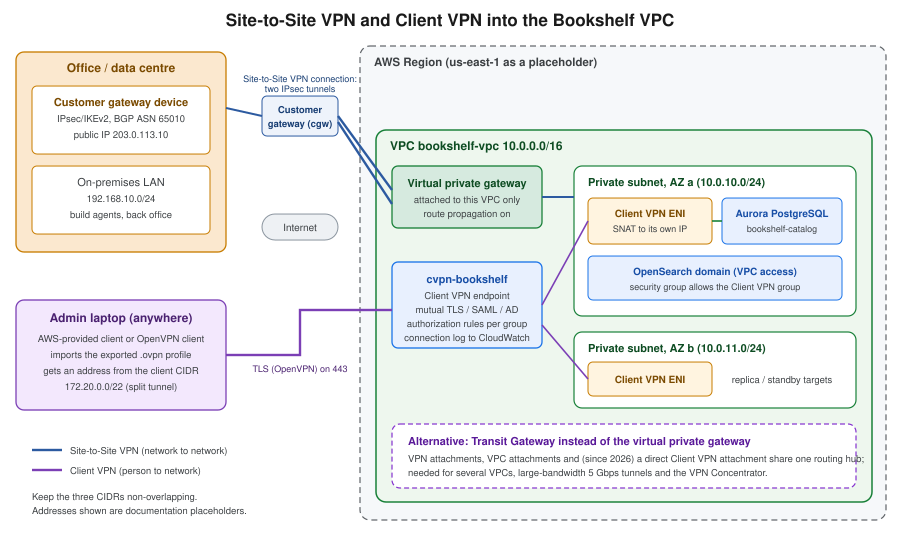

VPN and Hybrid Connectivity
|
This content was generated with the assistance of AI and should be verified against the official documentation before being relied on in production. |
Commands and behaviour on this page are current for AWS CLI v2 (2.37 line, command reference checked on 2026-10-01).
Client VPN, Site-to-Site VPN and Verified Access are managed through the ec2 namespace of the CLI and the VPC
console. Examples use us-east-1, the placeholder account ID 111122223333 and documentation-only IP addresses
(203.0.113.0/24); every ID, certificate ARN and key below is an obvious stand-in for your own value. Re-verify
quotas and prices on the linked pages before relying on them.
Everything in the Bookshelf network sits in private subnets (see VPC Networking): the Aurora
cluster bookshelf-catalog, the OpenSearch domain and the ElastiCache cache have no public endpoint. That is the
right default, and it creates the daily problem this page solves: a human administrator or an office network has to
reach those resources from outside the VPC, without opening them to the internet. AWS offers five tools for this, from
a managed OpenVPN service to a zero-trust proxy, and the choice is mostly about who connects (a person or a whole
network) and what they need to reach (anything in the VPC or one application).
Choosing a connectivity option
| Option | Connects | Best for | Main trade-off |
|---|---|---|---|
Client VPN |
One person’s device to the VPC (and peered or on-premises networks behind it), over OpenVPN/TLS. |
Bookshelf admins reaching private Aurora, OpenSearch or an EC2 host from a laptop. |
Billed per endpoint association and per connected client hour; you manage routes and authorization rules. |
Site-to-Site VPN |
A whole network (office, data centre, another cloud) to a VPC or Transit Gateway, over IPsec on the internet. |
An office or on-premises build network that must call private Bookshelf services. |
Each tunnel is limited in bandwidth and depends on internet quality; you operate the customer gateway device. |
Direct Connect |
A dedicated or hosted private circuit from your site to an AWS Direct Connect location. |
Steady, high-volume or latency-sensitive traffic, or compliance that forbids the public internet. |
Lead time of weeks, port and data-transfer charges, and a single circuit is not highly available. |
Verified Access |
One person’s browser or client to one application, evaluated per request against identity and device policy. |
Internal tools and admin consoles where a network-level VPN grants too much. |
Per-application hourly charge; targets must be behind a load balancer, a network interface, RDS or a CIDR. |
Session Manager port forwarding |
One person’s CLI to one port on one instance, through the Systems Manager service. |
Occasional, audited access to a database port from a laptop with no VPN at all. |
Needs the SSM agent and an instance profile on a host inside the VPC; it is not a network. |
The Azure counterparts are covered on VPN Gateway and Hybrid Connectivity: Client VPN corresponds to point-to-site, Site-to-Site VPN to a VPN Gateway site-to-site connection and Direct Connect to ExpressRoute.
Topology at a glance

Both tunnels end inside the same VPC. Site-to-Site VPN is network to network and is permanent; Client VPN is person to network and lives as long as the user’s session. They do not conflict, and the Bookshelf network uses Client VPN for administrators and, if an office exists, Site-to-Site VPN for build and back-office servers.
AWS Client VPN
Client VPN is a managed, OpenVPN-compatible service. You create an endpoint in a Region; clients connect to its DNS name, authenticate, receive an address from the client CIDR, and reach whatever the endpoint’s routes and authorization rules allow. The service scales out by itself; each connection has a baseline bandwidth of about 50 Mbps (raise it through AWS Support if needed).
Concepts
| Component | What it does |
|---|---|
Client VPN endpoint |
The termination point for all sessions: holds the server certificate, authentication options, client CIDR, logging and the route table. TCP or UDP, port 443 (default) or 1194. |
Client CIDR |
IPv4 range from which each connection gets an address; between /22 and /12, must not overlap the VPC CIDR or any route on the endpoint, and cannot be changed after creation. Size it at roughly twice the number of concurrent connections you expect because part of the range is reserved for the service. |
Target network association |
A subnet of one VPC (one subnet per Availability Zone) or, since April 2026, a direct Transit Gateway attachment. Associating a subnet creates Client VPN network interfaces in it and adds the VPC CIDR route automatically. Associate two subnets in different AZs for availability. |
Route |
An entry in the endpoint’s own route table (destination CIDR plus target subnet). Needed for destinations beyond the
VPC CIDR, such as a peered VPC, an on-premises network or, for full tunnel, |
Authorization rule |
Allows a destination CIDR for everyone or for one directory or IdP group. There are no rules by default, so a new endpoint lets nobody reach anything until you add one. |
Security group |
Applied to the Client VPN network interfaces. Resources receive traffic from these interfaces, so a target such as the Aurora security group can allow the Client VPN security group by reference. |
Connection log |
Optional connection events delivered to a CloudWatch Logs log group. |
Self-service portal |
A web page where users download the AWS-provided client and their profile; available for SAML and Active Directory authentication, not for mutual authentication. |
For IPv4 traffic the Client VPN network interface performs source NAT, so resources see the interface’s address, not the user’s client CIDR address; keep that in mind when writing security group rules and reading logs. IPv6 and dual-stack endpoints skip NAT and preserve the user’s address.
Authentication
You must always provision a server certificate in AWS Certificate Manager (ACM) in the endpoint’s Region. On top of that you choose how clients prove who they are; you can use one method alone or combine mutual authentication with a user-based method.
| Method | How it works | Choose it when |
|---|---|---|
Mutual authentication |
Each client presents a certificate signed by a CA you upload to ACM (commonly generated with easy-rsa or AWS Private CA). |
A handful of administrators and you accept managing and revoking certificates. No groups, so authorization rules apply to everyone. |
Active Directory |
Username and password checked against AWS Managed Microsoft AD or AD Connector, with optional MFA. Groups map to authorization rules. |
You already run a directory. The endpoint and the AWS Managed Microsoft AD must be in the same Region. |
SAML federation (single sign-on) |
The client opens the browser, signs in at your identity provider, and the SAML assertion carries the user’s groups. Works with IAM Identity Center, Okta, Microsoft Entra ID and others. |
The recommended choice for people: central MFA, joiner and leaver handled by the IdP, no certificates per user. |
The SAML flow is worth understanding because it explains most connection problems. The client never sees the IdP credentials; it receives a one-time assertion through a local listener.
Register the IdP application with the Assertion Consumer Service URL that AWS documents for Client VPN (a loopback
address and port used by the client, plus a separate URL for the self-service portal) and the audience (service
provider entity ID) shown in the documentation; then create an IAM SAML identity provider from the IdP metadata
XML. The group claim from the IdP is what an authorization rule’s access group ID is compared to. The SAML provider
for the self-service portal can be a second provider, referenced as SelfServiceSAMLProviderArn.
Create certificates for mutual authentication
Mutual authentication needs a CA, a server certificate and one client certificate per user. easy-rsa is a small CLI for building them. Run it on a trusted machine, keep the CA private key offline, and never commit any key to Git.
git clone https://github.com/OpenVPN/easy-rsa.git && cd easy-rsa/easyrsa3
./easyrsa init-pki
./easyrsa build-ca nopass
./easyrsa build-server-full server nopass
./easyrsa build-client-full admin1.example.com nopass
# Import server certificate and client CA into ACM in the endpoint's Region
export AWS_REGION=us-east-1
SERVER_CERT_ARN=$(aws acm import-certificate \
--certificate fileb://pki/issued/server.crt \
--private-key fileb://pki/private/server.key \
--certificate-chain fileb://pki/ca.crt \
--query CertificateArn --output text)
CLIENT_CA_ARN=$(aws acm import-certificate \
--certificate fileb://pki/issued/admin1.example.com.crt \
--private-key fileb://pki/private/admin1.example.com.key \
--certificate-chain fileb://pki/ca.crt \
--query CertificateArn --output text)Reference: Mutual authentication in AWS Client VPN and acm import-certificate. The ARN of the imported client certificate (whose chain contains the CA) is what the endpoint calls the client root certificate chain. For production, issue client certificates per person from a private CA, and use a client certificate revocation list to remove a lost laptop; the guide above describes both.
In the AWS Management Console
-
Open the VPC console, pick the Region in the selector, and choose Client VPN endpoints > Create client VPN endpoint. Choose Quickstart for recommended defaults or Standard for full control; the steps below follow Standard.
-
Name it
cvpn-bookshelf. Client IPv4 CIDR:172.20.0.0/22. -
Server certificate ARN: the ACM certificate imported above.
-
Authentication options: choose Use mutual authentication (and select the client CA certificate), Use user-based authentication > Active Directory authentication or Federated authentication (select the IAM SAML provider and, for the portal, the self-service provider).
-
Enable Connection logging and choose a CloudWatch log group (created beforehand).
-
Under Other parameters, enable Split-tunnel, optionally set DNS servers, the VPC and security groups, and choose the session timeout (8, 10, 12 or 24 hours) and transport protocol and port.
-
Choose Create client VPN endpoint. Its state is pending-associate.
-
Open the endpoint, Target network associations > Associate target network; select the VPC and a private subnet. Repeat for a subnet in a second AZ. The state changes to available after a few minutes.
-
Authorization rules > Add authorization rule: Destination network to enable
10.0.0.0/16, grant access to Allow access to users in a specific access group (enter the AD or IdP group ID) or Allow access to all users. -
Add routes under Route table only for networks beyond the VPC CIDR.
-
Download client configuration and give the file to users (or enable the self-service portal for SAML and Active Directory).
With the AWS CLI
export AWS_REGION=us-east-1
VPC_ID=vpc-0123456789abcdef0 # placeholder: your Bookshelf VPC
SUBNET_A=subnet-0123456789abcdef1 # private subnet, AZ a
SUBNET_B=subnet-0123456789abcdef2 # private subnet, AZ b
VPN_SG=sg-0123456789abcdef3 # security group for Client VPN interfaces
aws logs create-log-group --log-group-name /bookshelf/client-vpn
ENDPOINT_ID=$(aws ec2 create-client-vpn-endpoint \
--description cvpn-bookshelf \
--client-cidr-block 172.20.0.0/22 \
--server-certificate-arn "$SERVER_CERT_ARN" \
--authentication-options "Type=certificate-authentication,MutualAuthentication={ClientRootCertificateChainArn=$CLIENT_CA_ARN}" \
--connection-log-options Enabled=true,CloudwatchLogGroup=/bookshelf/client-vpn \
--split-tunnel \
--vpc-id "$VPC_ID" --security-group-ids "$VPN_SG" \
--session-timeout-hours 8 \
--tag-specifications 'ResourceType=client-vpn-endpoint,Tags=[{Key=Name,Value=cvpn-bookshelf}]' \
--query ClientVpnEndpointId --output text)
for S in "$SUBNET_A" "$SUBNET_B"; do
aws ec2 associate-client-vpn-target-network \
--client-vpn-endpoint-id "$ENDPOINT_ID" --subnet-id "$S"
done
# Allow everyone authenticated to reach the VPC (mutual TLS has no groups)
aws ec2 authorize-client-vpn-ingress \
--client-vpn-endpoint-id "$ENDPOINT_ID" \
--target-network-cidr 10.0.0.0/16 --authorize-all-groups
# Alternatively, restrict a destination to one IdP or AD group
# aws ec2 authorize-client-vpn-ingress --client-vpn-endpoint-id "$ENDPOINT_ID" \
# --target-network-cidr 10.0.20.0/24 --access-group-id <idp-group-id>
aws ec2 describe-client-vpn-target-networks \
--client-vpn-endpoint-id "$ENDPOINT_ID" \
--query 'ClientVpnTargetNetworks[].[TargetNetworkId,Status.Code]' --output table
aws ec2 export-client-vpn-client-configuration \
--client-vpn-endpoint-id "$ENDPOINT_ID" --output text > cvpn-bookshelf.ovpnFor certificate authentication, append the client certificate and key to the .ovpn file inside <cert> and <key>
tags (or use the cert and key directives), then import it into the AWS-provided client or any OpenVPN client.
For SAML, use Type=federated-authentication,FederatedAuthentication={SAMLProviderArn=<provider-arn>} and for
Active Directory Type=directory-service-authentication,ActiveDirectory={DirectoryId=<directory-id>}.
To manage sessions, use aws ec2 describe-client-vpn-connections --client-vpn-endpoint-id "$ENDPOINT_ID" and
aws ec2 terminate-client-vpn-connections --client-vpn-endpoint-id "$ENDPOINT_ID" --username <user>.
Split tunnel, DNS and routing
With full tunnel (the default) all client traffic, including internet traffic, goes through the VPN, which needs a
route to 0.0.0.0/0 plus an authorization rule, and usually a NAT gateway for egress. With split tunnel the
client receives only the routes of the endpoint and everything else uses the local connection; this is what
Bookshelf uses because admins only need the VPC. Split tunnel also lowers data-transfer cost and load on the endpoint.
Name resolution matters as much as routing. Aurora, OpenSearch and interface endpoints resolve to private addresses
only through the VPC’s Route 53 resolver (the VPC base address plus two, such as 10.0.0.2). Set the endpoint’s
DNS servers to that address (or to Route 53 Resolver inbound endpoint addresses) so bookshelf-catalog.cluster-…
resolves to a private IP; otherwise the laptop resolves the public name or nothing at all. The AWS-provided client
pushes the DNS servers; Windows full-tunnel clients force all DNS through the tunnel, so a reachable resolver is
required there. Client LAN ranges outside the private RFC 1918 and link-local ranges make the service force all LAN
traffic into the tunnel.
Security: IAM policies and network rules
Two audiences need IAM permissions. The platform team that manages endpoints needs the ec2 Client VPN actions; the
end users need none (they authenticate with certificates or the IdP, not IAM). A policy for the platform team,
scoped to the Bookshelf endpoint through a tag, with the log group and ACM read access it needs:
{
"Version": "2012-10-17",
"Statement": [
{
"Sid": "ManageTaggedClientVpnEndpoint",
"Effect": "Allow",
"Action": [
"ec2:AssociateClientVpnTargetNetwork",
"ec2:DisassociateClientVpnTargetNetwork",
"ec2:AuthorizeClientVpnIngress",
"ec2:RevokeClientVpnIngress",
"ec2:CreateClientVpnRoute",
"ec2:DeleteClientVpnRoute",
"ec2:ModifyClientVpnEndpoint",
"ec2:TerminateClientVpnConnections",
"ec2:ExportClientVpnClientConfiguration",
"ec2:ApplySecurityGroupsToClientVpnTargetNetwork"
],
"Resource": "arn:aws:ec2:us-east-1:111122223333:client-vpn-endpoint/*",
"Condition": {
"StringEquals": { "aws:ResourceTag/Name": "cvpn-bookshelf" }
}
},
{
"Sid": "DescribeAndCreate",
"Effect": "Allow",
"Action": [
"ec2:CreateClientVpnEndpoint",
"ec2:CreateTags",
"ec2:DescribeClientVpnEndpoints",
"ec2:DescribeClientVpnTargetNetworks",
"ec2:DescribeClientVpnAuthorizationRules",
"ec2:DescribeClientVpnRoutes",
"ec2:DescribeClientVpnConnections",
"ec2:DescribeSubnets",
"ec2:DescribeSecurityGroups"
],
"Resource": "*"
},
{
"Sid": "ReadCertificatesAndLogGroup",
"Effect": "Allow",
"Action": [ "acm:DescribeCertificate", "acm:GetCertificate", "logs:DescribeLogGroups", "logs:CreateLogStream" ],
"Resource": "*"
}
]
}Verify the exact resource types and condition keys in the Service Authorization Reference for Amazon EC2; some Client VPN actions also touch subnet, security-group and VPC resources and need those ARNs (or a broader statement) to succeed. Network-side least privilege matters more than this policy:
-
Give the endpoint its own security group (for example
sg-cvpn-bookshelf) and let the Aurora and OpenSearch security groups allow only that group on their ports, never10.0.0.0/16. -
Write authorization rules for the narrowest destination CIDR and the right IdP group; the default is no access.
-
Keep the session timeout short (8 hours) and use SAML with MFA so removing a user at the IdP ends their access.
-
Enable connection logging; the log shows the username, client CIDR address and connection time.
-
Device posture (CrowdStrike, Jamf or JumpCloud tokens evaluated with a Cedar authorization policy) can be added when device health must gate access; see the Client VPN device posture page.
Bookshelf scenario: admins reaching private Aurora and OpenSearch
The Bookshelf admins need psql against bookshelf-catalog and a browser against the OpenSearch dashboards, both in
private subnets. The Client VPN endpoint cvpn-bookshelf uses SAML with IAM Identity Center so the bookshelf-admins
group becomes the access group of two authorization rules (the database and the OpenSearch subnets). Split tunnel keeps
other traffic off the VPN, and the endpoint’s DNS server is the VPC resolver. After connecting:
psql "host=<aurora-writer-endpoint> dbname=catalog user=<admin-user> sslmode=verify-full sslrootcert=global-bundle.pem"
curl -s https://<opensearch-vpc-endpoint>/_cluster/healthThe database still requires its own authentication (IAM database authentication or the password in Secrets Manager, see Secrets Manager, Parameter Store and KMS); the VPN only provides the path.
Transit Gateway attachment and larger networks
A Client VPN endpoint can associate with subnets of one VPC. To reach several VPCs or an on-premises network behind a
Transit Gateway, you could associate a subnet and add routes through the VPC (peering is not transitive, so that
only works for directly attached networks). Since April 2026 the endpoint can instead attach directly to a Transit Gateway
(--transit-gateway-configuration on create-client-vpn-endpoint), which makes the endpoint another attachment of
the hub and lets the Transit Gateway route tables decide what users can reach. Check the
Transit Gateway integration with Client VPN page
for the current Region availability and prerequisites.
AWS Site-to-Site VPN
A Site-to-Site VPN connection joins your network to AWS with two IPsec tunnels (IKEv2) terminating in two different Availability Zones, so one connection already survives an AWS-side endpoint replacement. A standard tunnel carries up to about 1.25 Gbps; use both tunnels for resilience, not for doubling bandwidth, unless you configure equal-cost multi-path on a Transit Gateway.
Building blocks
| Resource | Purpose |
|---|---|
Customer gateway (cgw) |
An AWS resource that records the public IP address (or a certificate) and BGP ASN of your device. It is metadata, not a device; the device itself is the customer gateway device, a router, firewall or software appliance. |
Virtual private gateway (VGW) |
The AWS side of the VPN, attached to exactly one VPC. Simple and free of an hourly gateway charge. |
Transit Gateway (TGW) |
A regional hub the VPN attaches to together with many VPCs. Needed for several VPCs, for ECMP across tunnels, for IPv6 outer tunnel addresses, for large-bandwidth tunnels and for the VPN Concentrator. |
VPN connection |
The connection object: two tunnels, their pre-shared keys or certificates, routing type and options. |
Routing |
Dynamic (BGP) exchanges routes and fails over automatically and is preferred; static needs you to list destination CIDRs and gives no health-aware failover for them. |
| Aspect | Virtual private gateway | Transit Gateway |
|---|---|---|
Attaches to |
One VPC |
Many VPCs, Direct Connect gateways, other TGWs, and VPN |
ECMP over both tunnels |
No (one active path) |
Yes (BGP) |
Large-bandwidth tunnels (up to 5 Gbps per tunnel) |
No |
Yes (also Cloud WAN) |
VPN Concentrator |
No |
Yes |
IPv6 outer tunnel addresses |
No |
Yes |
Cost model |
Connection-hours (and data transfer) |
Connection-hours, plus TGW attachment-hours and data processing |
Choose it when |
One VPC and one site |
Several VPCs or sites, or growth is likely |
In the AWS Management Console
-
In the VPC console choose Customer gateways > Create customer gateway. Name
cgw-bookshelf-office, BGP ASN65010, IP address203.0.113.10(the public address of your device) or a certificate from AWS Private CA. -
Choose Virtual private gateways > Create virtual private gateway, then Actions > Attach to VPC and select
bookshelf-vpc. (For a Transit Gateway, create the gateway and use the VPN attachment instead.) -
Choose Site-to-Site VPN connections > Create VPN connection. Name
vpn-bookshelf-office. Target gateway type: Virtual private gateway or Transit gateway; choose the gateway and the customer gateway. -
Routing options: Dynamic (requires BGP) or Static (enter on-premises CIDRs, e.g.
192.168.10.0/24). Optionally enable Enable acceleration (Transit Gateway only), choose Tunnel bandwidth Large (Transit Gateway or Cloud WAN only), set tunnel inside CIDRs and pre-shared keys under Tunnel options, or leave them auto-generated. -
Create the connection (state pending, then available; tunnels stay DOWN until your device initiates them).
-
Download configuration: choose the vendor, platform and software of your device and the IKE version. The file contains the tunnel endpoints, keys and BGP settings; protect it like a secret.
-
In the route table of the private subnets, enable Route propagation for the VGW (or add routes to the TGW). Allow the on-premises CIDR in security groups and network ACLs.
With the AWS CLI
export AWS_REGION=us-east-1
VPC_ID=vpc-0123456789abcdef0
PRIVATE_RT=rtb-0123456789abcdef1
CGW_ID=$(aws ec2 create-customer-gateway --type ipsec.1 \
--public-ip 203.0.113.10 --bgp-asn 65010 --device-name office-router \
--tag-specifications 'ResourceType=customer-gateway,Tags=[{Key=Name,Value=cgw-bookshelf-office}]' \
--query CustomerGateway.CustomerGatewayId --output text)
VGW_ID=$(aws ec2 create-vpn-gateway --type ipsec.1 --amazon-side-asn 64512 \
--query VpnGateway.VpnGatewayId --output text)
aws ec2 attach-vpn-gateway --vpn-gateway-id "$VGW_ID" --vpc-id "$VPC_ID"
VPN_ID=$(aws ec2 create-vpn-connection --type ipsec.1 \
--customer-gateway-id "$CGW_ID" --vpn-gateway-id "$VGW_ID" \
--tag-specifications 'ResourceType=vpn-connection,Tags=[{Key=Name,Value=vpn-bookshelf-office}]' \
--query VpnConnection.VpnConnectionId --output text)
# Let the private route table learn on-premises routes learned through BGP
aws ec2 enable-vgw-route-propagation --route-table-id "$PRIVATE_RT" --gateway-id "$VGW_ID"
# Static routing instead of BGP
# aws ec2 create-vpn-connection --type ipsec.1 --customer-gateway-id "$CGW_ID" \
# --vpn-gateway-id "$VGW_ID" --options '{"StaticRoutesOnly":true}'
# aws ec2 create-vpn-connection-route --vpn-connection-id "$VPN_ID" --destination-cidr-block 192.168.10.0/24
# Check the tunnels
aws ec2 describe-vpn-connections --vpn-connection-ids "$VPN_ID" \
--query 'VpnConnections[0].VgwTelemetry[].[OutsideIpAddress,Status,StatusMessage]' --output tableFor a Transit Gateway target, replace --vpn-gateway-id with --transit-gateway-id "$TGW_ID" and, for tunnels up
to 5 Gbps, add --options TunnelBandwidth=large; add EnableAcceleration=true for an accelerated VPN. Configure the
device from a template instead of hand-typing keys:
aws ec2 get-vpn-connection-device-types --query 'VpnConnectionDeviceTypes[].[VpnConnectionDeviceTypeId,Vendor,Platform]' --output table
aws ec2 get-vpn-connection-device-sample-configuration \
--vpn-connection-id "$VPN_ID" --vpn-connection-device-type-id <device-type-id> \
--internet-key-exchange-version ikev2 --query VpnConnectionDeviceSampleConfiguration --output textThe sample configuration contains the tunnel pre-shared keys. Do not paste it into tickets, chat or Git. References: create-vpn-connection, create-customer-gateway, create-vpn-gateway, describe-vpn-connections.
Equivalent CloudFormation for the same Bookshelf office link:
Resources:
OfficeCustomerGateway:
Type: AWS::EC2::CustomerGateway
Properties:
Type: ipsec.1
IpAddress: 203.0.113.10
BgpAsn: 65010
Tags: [ { Key: Name, Value: cgw-bookshelf-office } ]
Vgw:
Type: AWS::EC2::VPNGateway
Properties:
Type: ipsec.1
VgwAttachment:
Type: AWS::EC2::VPCGatewayAttachment
Properties:
VpcId: !Ref BookshelfVpc
VpnGatewayId: !Ref Vgw
OfficeVpn:
Type: AWS::EC2::VPNConnection
Properties:
Type: ipsec.1
CustomerGatewayId: !Ref OfficeCustomerGateway
VpnGatewayId: !Ref Vgw
StaticRoutesOnly: false
PrivateRoutePropagation:
Type: AWS::EC2::VPNGatewayRoutePropagation
DependsOn: VgwAttachment
Properties:
RouteTableIds: [ !Ref PrivateRouteTable ]
VpnGatewayIds: [ !Ref Vgw ]Reference: AWS::EC2::VPNConnection.
Routing, tunnel options and monitoring
-
BGP advertises your prefixes (up to the documented route limit) and learns the VPC CIDRs; use unique private ASNs (the customer gateway ASN is 2-byte, the Amazon side can be 4-byte for a VGW) and prefer BGP so a failed tunnel is withdrawn automatically.
-
Static routing is the fallback for devices without BGP; the tunnels carry only the CIDRs you declare.
-
Tunnel options let you pin inside CIDRs (
/30from169.254.0.0/16), pre-shared keys (8 to 64 characters), IKE lifetimes, dead-peer-detection timeout and action, and the startup action (addwaits for your device,startmakes AWS initiate). Prefer generated pre-shared keys stored in Secrets Manager over reusable ones. -
Accelerated VPN routes tunnel traffic through AWS Global Accelerator to the nearest edge location, helpful when the office is far from the Region; it needs a Transit Gateway attachment and adds accelerator charges.
-
Large-bandwidth tunnels raise a tunnel from 1.25 to up to 5 Gbps for Transit Gateway or Cloud WAN attachments.
-
The VPN Concentrator connects many small sites (the documentation targets 25 or more sites under 100 Mbps each, 5 Gbps aggregate, BGP only) through a single Transit Gateway attachment instead of one connection per site.
-
Monitor with the
AWS/VPNCloudWatch metricsTunnelState,TunnelDataInandTunnelDataOut; alarm whenTunnelStatedrops below 1 for a tunnel, and enable tunnel logs to CloudWatch Logs for IKE negotiation detail. AWS replaces tunnel endpoints during maintenance, so the second tunnel and a device that re-establishes both are not optional. -
Overlapping CIDRs between a VPC and the on-premises network cannot be routed; plan addressing (see VPC Networking) before building anything.
AWS Direct Connect (briefly)
Direct Connect is a private, dedicated circuit between your equipment and AWS at a Direct Connect location, with consistent latency and lower per-GB transfer cost than internet egress. Traffic is not encrypted by default; use MACsec on supported dedicated ports, or run a Site-to-Site VPN over the Direct Connect public or transit virtual interface when encryption in transit is required.
| Concept | Detail |
|---|---|
Dedicated connection |
A physical port (1, 10, 100 or 400 Gbps) allocated to you at a location. |
Hosted connection |
A slice of a partner’s port (sub-1 Gbps up to the partner’s offered capacities); quicker to provision. |
Virtual interface (VIF) |
Private VIF reaches a VPC through a virtual private gateway or a Direct Connect gateway; transit VIF reaches a Transit Gateway through a Direct Connect gateway; public VIF reaches AWS public endpoints such as S3 public IPs. |
Direct Connect gateway |
A global resource that connects one connection to VPCs or Transit Gateways in multiple Regions of one partition. |
Resiliency |
One connection is a single point of failure. The documented maximum-resiliency model uses connections at two locations; a Site-to-Site VPN is the usual low-cost backup path. |
Create the connection in the console (Direct Connect > Connections), accept the LOA-CFA, order the cross connect
from the facility, then create the VIF. The CLI equivalents are aws directconnect create-connection,
create-direct-connect-gateway, create-private-virtual-interface and create-transit-virtual-interface; most of the
elapsed time is the physical cross connect, not AWS configuration. Bookshelf does not need Direct Connect; it appears
here so you know when a VPN stops being enough (steady transfers to an on-premises system of record, regulated links).
AWS Verified Access: the VPN-less alternative
A VPN grants network access: once connected, a user can try every host the authorization rules allow, and the device is a trusted extension of the network. Verified Access evaluates every request to a single application against identity (an IdP such as IAM Identity Center or an OIDC provider) and optionally device posture, using Cedar policies, and logs every attempt. Users reach the application through the Verified Access endpoint’s DNS name in a browser, or through the connectivity client for non-HTTP protocols, with no VPN client.
| Component | Role |
|---|---|
Verified Access instance |
The container for trust providers and groups (one per environment). |
Trust provider |
Identity (IAM Identity Center or OIDC) and optional device (for example Jamf, CrowdStrike) sources of claims. |
Group |
A set of endpoints that share a Cedar access policy. |
Endpoint |
An application: type |
Access policy |
Cedar rules over identity and device claims, for example allow members of |
export AWS_REGION=us-east-1
VAI=$(aws ec2 create-verified-access-instance --description bookshelf-ava \
--query VerifiedAccessInstance.VerifiedAccessInstanceId --output text)
# Create and attach a trust provider (here: IAM Identity Center), then a group and an endpoint
aws ec2 create-verified-access-group --verified-access-instance-id "$VAI" \
--policy-document 'permit(principal, action, resource) when { context.idc.groups has "<group-id>" };'
aws ec2 create-verified-access-endpoint --verified-access-group-id <group-id> \
--endpoint-type load-balancer --attachment-type vpc \
--domain-certificate-arn <acm-certificate-arn> --application-domain admin.example.com \
--endpoint-domain-prefix bookshelf-admin \
--load-balancer-options 'LoadBalancerArn=<internal-alb-arn>,Port=443,Protocol=https,SubnetIds=[<subnet-a>,<subnet-b>]' \
--security-group-ids <sg-id>The policy text and claim names depend on the trust provider (context keys follow the trust provider’s reference name); copy the exact form from the Verified Access policy documentation. References: What is AWS Verified Access, create-verified-access-endpoint. Use it for internal HTTP tools (an admin UI behind an internal ALB) and when you want per-application decisions; use Client VPN when users need arbitrary protocols across many private resources.
Session Manager port forwarding
For occasional database or debug access, Systems Manager Session Manager can forward a local port to a port on an
instance (or, with a remote host document, to another host reachable from that instance). It needs no inbound
security group rule, no bastion with an open SSH port, and every session is logged to CloudTrail and optionally to S3
or CloudWatch. The target needs the SSM agent and an instance profile with AmazonSSMManagedInstanceCore, and your
laptop needs the Session Manager plugin for the CLI.
aws ssm start-session --target <instance-id> \
--document-name AWS-StartPortForwardingSessionToRemoteHost \
--parameters '{"host":["<aurora-writer-endpoint>"],"portNumber":["5432"],"localPortNumber":["15432"]}'
# In another terminal: psql "host=127.0.0.1 port=15432 dbname=catalog user=<admin-user>"The user’s IAM policy should allow ssm:StartSession only on the target instance and the port-forwarding documents:
{
"Version": "2012-10-17",
"Statement": [
{
"Effect": "Allow",
"Action": "ssm:StartSession",
"Resource": [
"arn:aws:ec2:us-east-1:111122223333:instance/i-0123456789abcdef0",
"arn:aws:ssm:us-east-1::document/AWS-StartPortForwardingSessionToRemoteHost"
]
},
{
"Effect": "Allow",
"Action": [ "ssm:TerminateSession", "ssm:ResumeSession" ],
"Resource": "arn:aws:ssm:*:*:session/${aws:username}-*"
}
]
}Reference: Start a session and ssm start-session. It is the lightest option for a single admin and a single port; it is not a replacement for Client VPN when many tools and ports are involved.
Hybrid DNS
A VPN or Direct Connect link moves packets, not names. Resolving between the two networks needs Route 53 Resolver:
-
An inbound endpoint (network interfaces in two subnets) lets on-premises DNS servers forward queries for AWS private zones and VPC-only names (for example
bookshelf-catalog.cluster-…rds.amazonaws.comor a private hosted zone such asbookshelf.internal) to the VPC resolver. -
An outbound endpoint plus forwarding rules lets resources in the VPC resolve names that only your corporate DNS knows, such as
corp.example.com. -
Remote Client VPN users get a resolver through the endpoint’s DNS server settings (point them at the inbound endpoint addresses or the VPC resolver).
aws route53resolver create-resolver-endpoint --name bookshelf-inbound --direction INBOUND \
--creator-request-id "$(uuidgen)" --security-group-ids <sg-id> \
--ip-addresses SubnetId=<subnet-a> SubnetId=<subnet-b>
aws route53resolver create-resolver-rule --name corp-forward --rule-type FORWARD \
--domain-name corp.example.com --resolver-endpoint-id <outbound-endpoint-id> \
--creator-request-id "$(uuidgen)" --target-ips Ip=192.168.10.53,Port=53Reference: Route 53 Resolver; hosted zones, private zones and ACM are covered on Route 53, DNS and ACM Certificates. Security groups on the resolver endpoints must allow DNS (TCP and UDP 53) from the on-premises ranges.
Networking considerations
-
Addressing: the VPC CIDR, client CIDR and on-premises ranges must all be distinct; Site-to-Site VPN cannot route overlapping networks and the Client VPN client CIDR cannot be edited later.
-
Routes: Client VPN adds the VPC CIDR itself; a VGW needs route propagation or static routes in each route table that should reach on-premises; a Transit Gateway needs both attachment association and propagation in its route tables, plus VPC route table entries pointing to it.
-
Filtering: security groups on targets must allow the Client VPN security group (or the on-premises CIDR); network ACLs are stateless and need both directions (see VPC Networking).
-
Egress: full-tunnel Client VPN needs NAT for internet traffic; prefer split tunnel.
-
Availability: associate subnets in at least two AZs for Client VPN; use both tunnels (and ideally two customer gateway devices) for Site-to-Site VPN; combine Direct Connect with a VPN backup.
Limits and scaling
Client VPN scales horizontally by itself; the documented limits to plan around are the baseline of about 50 Mbps per
connection, one subnet per AZ in the association, no associations in dedicated-tenancy VPCs, a maximum username length
of 1,024 bytes, and no connections from a computer with several logged-in users. A Site-to-Site VPN tunnel carries
about 1.25 Gbps (up to 5 Gbps with large-bandwidth tunnels on a Transit Gateway), supports IKEv2, does not support
Path MTU Discovery, and cannot mix IPv4 and IPv6 traffic in one connection. Quotas such as endpoints per Region,
authorization rules per endpoint, routes per endpoint, concurrent connections and VPN connections per Region are
adjustable in Service Quotas (aws service-quotas list-service-quotas --service-code vpc); confirm current values on
the Client VPN and Site-to-Site VPN quota pages before designing at scale.
Pricing model
Prices change; use the dated pages AWS VPN pricing, Direct Connect pricing and Verified Access pricing. The cost drivers are:
| Service | What you pay for |
|---|---|
Client VPN |
An hourly charge per endpoint association (so two subnets cost twice, and an endpoint left associated costs money even with no users) plus an hourly charge per active connection; data transfer out to the internet, CloudWatch Logs for connection logging, Lambda invocations for the client connect handler, and public IPv4 addresses on the network interfaces when the subnet has an internet gateway. |
Site-to-Site VPN |
An hourly charge per VPN connection while it exists, plus data transfer out; accelerated VPN adds two Global Accelerator accelerators (hourly plus data transfer premium); a Transit Gateway target adds TGW attachment-hours and per-GB data processing. |
Direct Connect |
Port-hours by capacity, data transfer out at a Direct Connect rate, hosted-connection fees from the partner, and any cross-connect fee at the colocation facility. |
Verified Access |
An hourly charge per application (endpoint) plus per-GB of data processed. |
Session Manager |
No extra charge for the sessions themselves; you pay for the instance, optional logging storage and any NAT or
interface endpoints ( |
Cost controls: delete endpoint associations (or the whole endpoint) outside business hours in non-production accounts, remove unused VPN connections, avoid a full tunnel when split tunnel works, and consider Verified Access or Session Manager when only a few applications or hosts must be reachable.
Troubleshooting
| Symptom | Check |
|---|---|
Client cannot connect ( |
Security group and network ACL on the target subnets, the endpoint’s port and protocol allowed by the client’s
network (try 443/TCP), the server certificate in the endpoint’s Region and not expired, the endpoint state
|
Connected but nothing reachable |
Authorization rule for the destination CIDR (none by default) and group membership; route for the destination in the endpoint route table; target’s security group allows the Client VPN group; split tunnel pushes the route. |
Reachable by IP, not by name |
Endpoint DNS servers point at the VPC resolver or a resolver inbound endpoint; the client is not using a cached public record. |
SAML sign-in loops or is rejected |
ACS URL and audience in the IdP application match the documented values; the SAML metadata in IAM is current; the group attribute is released; the user can reach the local listener (browser plugin or firewall). |
Authentication failed (mutual TLS) |
Client certificate signed by the uploaded CA, certificate not on the revocation list, certificate and key present
in the |
Site-to-Site tunnel |
Device initiates the tunnel (for |
Tunnel up but no traffic |
Route propagation or static routes in the VPC route tables; BGP session |
Only one tunnel carries traffic |
By design on a VGW (one active path); BGP path preferences on your device; ECMP needs a Transit Gateway. |
Where to look: aws ec2 describe-client-vpn-connections, the Client VPN connection log group in CloudWatch Logs
(Logs Insights queries by username and result), aws ec2 describe-vpn-connections (VgwTelemetry), the AWS/VPN
metrics, VPC Flow Logs and the VPC Reachability Analyzer for the path from a Client VPN interface to the target.
Clean up
Delete in dependency order; Client VPN endpoints and VPN connections bill by the hour until removed.
# Client VPN
aws ec2 revoke-client-vpn-ingress --client-vpn-endpoint-id "$ENDPOINT_ID" --target-network-cidr 10.0.0.0/16 --revoke-all-groups
for ASSOC in $(aws ec2 describe-client-vpn-target-networks --client-vpn-endpoint-id "$ENDPOINT_ID" \
--query 'ClientVpnTargetNetworks[].AssociationId' --output text); do
aws ec2 disassociate-client-vpn-target-network --client-vpn-endpoint-id "$ENDPOINT_ID" --association-id "$ASSOC"
done
# wait until no associations remain, then
aws ec2 delete-client-vpn-endpoint --client-vpn-endpoint-id "$ENDPOINT_ID"
aws logs delete-log-group --log-group-name /bookshelf/client-vpn
aws acm delete-certificate --certificate-arn "$SERVER_CERT_ARN"
aws acm delete-certificate --certificate-arn "$CLIENT_CA_ARN"
# Site-to-Site VPN
aws ec2 delete-vpn-connection --vpn-connection-id "$VPN_ID"
aws ec2 disable-vgw-route-propagation --route-table-id "$PRIVATE_RT" --gateway-id "$VGW_ID"
aws ec2 detach-vpn-gateway --vpn-gateway-id "$VGW_ID" --vpc-id "$VPC_ID"
aws ec2 delete-vpn-gateway --vpn-gateway-id "$VGW_ID"
aws ec2 delete-customer-gateway --customer-gateway-id "$CGW_ID"
# Verified Access (if created): delete endpoint, then group, then trust provider, then instance
# Resolver: aws route53resolver delete-resolver-rule / delete-resolver-endpointDelete the CloudFormation stack instead if you deployed the template. Also remove the Client VPN profile from users' devices, delete the easy-rsa working directory (it holds the CA private key), and delete the IAM SAML provider and the IdP application if they were created only for this exercise.
Related pages
-
VPC Networking covers the VPC, route tables, security groups, endpoints and Transit Gateway these services plug into.
-
Route 53, DNS and ACM Certificates covers hosted zones, Resolver and ACM.
-
Load Balancers and Gateways shows the internal load balancers Verified Access can front.
-
Identity and Access covers IAM Identity Center, SAML and the roles used by Session Manager.
-
Amazon RDS, Amazon Aurora and OpenSearch and Search on AWS are the private resources admins reach.
-
OpenID Connect explains the OIDC concepts behind Verified Access trust providers.
-
VPN Gateway and Hybrid Connectivity is the Azure counterpart.